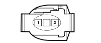
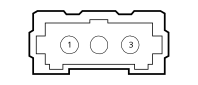
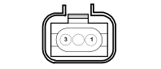

A030B Ignition coil(ENGINE)
- Path
- Electrical equipment > Connectors > A Starting - recharging > A030 Ignition coil > A030B Ignition coil(ENGINE)
- Kind
- connector pinout (pin -> wire colour -> other end)
- Applies to
- engines: 2.0 TB, 2.4 20V, 3.0 V6, 3.2 V6; all production periods
- Interactive page
- https://sloeber94.github.io/elrnDB-lThss/en/#/28005654
Applies to: engines: 2.4 20V; all production periods

Wiring | Colour |
|---|---|
50 ENGINE |
Applies to: engines: 3.2 V6; all production periods

Wiring | Colour |
|---|---|
50 ENGINE |
Pin | Cable | Destination | |||
|---|---|---|---|---|---|
Diameter | Colour | Node | Connector | Pin | |
Applies to: engines: 3.0 V6; all production periods
Wiring | Colour |
|---|---|
50 ENGINE |
Applies to: engines: 2.0 TB; all production periods

Wiring | Colour |
|---|---|
50 ENGINE |
Topics linked from this page (14)
- A030A Ignition coil(ENGINE)
- A030C Ignition coil(ENGINE)
- A030D Ignition coil(ENGINE)
- A030E Ignition coil(ENGINE)
- A030F Ignition coil(ENGINE)
- C040 Earth on engine
- D004 Front/engine coupling
- M010B Engine management control unit(ENGINE)
- N070A Injector(ENGINE)
- N070B Injector(ENGINE)
- N070C Injector(ENGINE)
- N070D Injector(ENGINE)
- N070E Injector(ENGINE)
- N070F Injector(ENGINE)
Topics that link to this page (13)
- A030A Ignition coil(ENGINE)
- A030C Ignition coil(ENGINE)
- A030D Ignition coil(ENGINE)
- A030E Ignition coil(ENGINE)
- A030F Ignition coil(ENGINE)
- C040 Earth on engine(FRONT)
- M010B Engine management control unit(ENGINE)
- N070A Injector(ENGINE)
- N070B Injector(ENGINE)
- N070C Injector(ENGINE)
- N070D Injector(ENGINE)
- N070E Injector(ENGINE)
- N070F Injector(ENGINE)